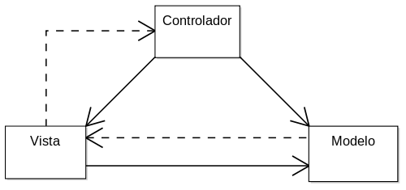
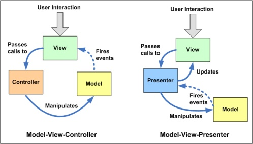

Arquitecturas modernas para aplicaciones Web
Nicolas Celico / @NicoCelico / http://www.linkedin.com/in/ncelico
Temas de hoy
- N-Capas
- Capa Web
- Capa de Aplicación
- Capa de Datos
- Sistemas de Control de Versiones
- Preguntas
Ya sabemos...
MVC

N-Capas

N-Capas | 2
N-Capas | 3
N-Capas | Ejemplo
Un buen ejemplo
Capa de datos
- Solo puede ser accedida desde la Capa de Aplicación
- Solo UN usuario tiene acceso a la base (el de la Capa de Aplicación)
- La seguridad se maneja en la capa superior
- Logging / Auditoría
- Change Tracking nativo de la BD
- Manual en las transacciones
Capa de datos | 2
- Acceso a los datos
- Stored Procedures
- Entity Framework
- NUNCA esto:
string queryString = "SELECT ProductID, UnitPrice, ProductName from dbo.products " + "WHERE UnitPrice > @pricePoint " + "ORDER BY UnitPrice DESC;"; using (SqlConnection connection = new SqlConnection(connectionString)) { SqlCommand command = new SqlCommand(queryString, connection); command.Parameters.AddWithValue("@pricePoint", paramValue); connection.Open(); SqlDataReader reader = command.ExecuteReader(); . . .
Capa de Aplicación
- Solo accesible por el Web Server
- Puede acceder tanto a la DB como a otros recursos compartidos
- FTP
- File System
- Etc
Capa de Aplicación | 2
- La lógica de negocios vive en esta capa
Capa de Aplicación | 3
- Patrones
- Unit of Work
- Repository
- Ejemplo (en ingles)
Capa de Aplicación | 4
Capa de Aplicación | 5
“Con SOA, podemos tener una sola Capa de Aplicación que es accedida por diferentes Capas de presentación, manteniendo un acceso a datos controlado y una lógica de negocios universal y testeada.”
- Capa Web
- Aplicación de escritorio
- Impresoras digitales
- Ticketeadoras
- Palms, Smartphones, etc
Capa de Presentación
Web
- Es la capa con la que interactua el usuario
- Solo puede acceder a la Capa de Aplicación
- TODOS los recursos que necesite se manejan en dicha capa
- HTML para el layout
- CSS para el estilo
- Javascript para las interacciones
Capa Web
Archivos Separados
|
Simple
|
Arbol
|

Capa Web | 2
Buenas Prácticas
- HTML solo para el layout
- NO estilos inline
MAL
- SI clases
... lorem impsum ...
- NO scripts inline
- NO estilos inline
Capa Web | 3
Frameworks
Capa Web | 4
Linters
Capa Web | 5
Soporte Multi Browser
Capa Web | 6
Patrones de Front-End

Capa Web | 7
Patrones de Front-End | 2

Capa Web | 8
Frameworks mas avanzados
Capa Web | 9
Unit Testing
CVS
- Centralizado
- Distribuido
- TFS (Version Control)
- Subversion
- Git
- Perforce
- Mercurial
¿PREGUNTAS?